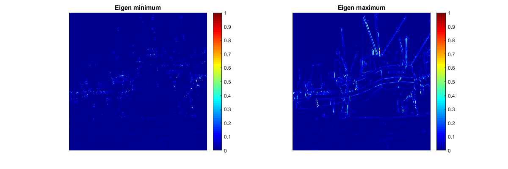

Contents
MyMainScript
close all;
clc;
tic;
Variable initializations
img_mat = load('../data/boat.mat');
img = double(img_mat.imageOrig);
img = img - min(min(img));
img = img / max(max(img));
sigma1 = 0.05;
sigma2 = 0.55;
corn_k = 0.183;
threshlod = 0.007;
window_size = 5;
1st Gaussian Smoothing -- noise removal
img = imgaussfilt(img, sigma1);
Image derivatives along X and Y using Sobel operator
[Ix, Iy] = imgradientxy(img, 'sobel');
figure('name','ImageDerivatives','Position', [100 100 1200 400]);
subplot(1,2,1),imshow(Ix);
colormap('gray');
title('X - Derivative of img');
subplot(1,2,2),imshow(Iy);
colormap('gray');
title('Y - Derivative of img');

Eigen values of Structure Tensor
Ix2 = Ix.^2;
Iy2 = Iy.^2;
Ixy = Ix.*Iy;
output_Ix2 = imgaussfilt(Ix2, sigma2, 'Filtersize', window_size);
output_Iy2 = imgaussfilt(Iy2, sigma2, 'Filtersize', window_size);
output_Ixy = imgaussfilt(Ixy, sigma2, 'Filtersize', window_size);
trace = output_Ix2 + output_Iy2;
det = output_Ix2.*output_Iy2 - output_Ixy.^2;
eig_min=(trace/2)-((trace/2).^2 - det).^(1/2);
eig_max=(trace/2) +((trace/2).^2 - det).^(1/2);
figure('name','Eigen Value Images','Position', [100 100 1200 400]);
subplot(1,2,1),imshow(eig_min/max(max(eig_min)));
colorbar;
colormap('jet');
title('Eigen minimum');
subplot(1,2,2),imshow(eig_max/max(max(eig_max)));
colorbar;
colormap('jet');
title('Eigen maximum');

Harris corner-ness measure and displaying the corners
corners = myHarrisCornerDetector(eig_min, eig_max, corn_k, threshlod);
[rows, columns] = find(corners > 0);
marker_positions = cat(2, columns, rows);
corners_marked = insertMarker(img, marker_positions, 'color', 'green', 'Size', 3);
figure('name','Corner-ness','Position', [100 100 1200 400]);
subplot(1,2,1),imshow(corners/max(max(corners)));
colorbar;
colormap('gray');
title('corners');
subplot(1,2,2),imshow(corners_marked);
colorbar;
colormap('gray');
title('corners-marked');

Reporting the parameters
fprintf('std for smoothing(sigma1) is %f\n', sigma1);
fprintf('std for Ix, Iy(sigma2) is %f\n', sigma2);
fprintf('k value in corner-ness measure(k) is %f\n', corn_k);
toc;
std for smoothing(sigma1) is 0.050000
std for Ix, Iy(sigma2) is 0.550000
k value in corner-ness measure(k) is 0.183000
Elapsed time is 4.086073 seconds.